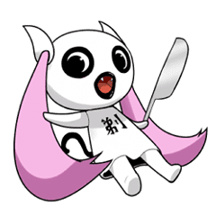
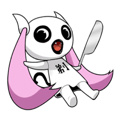

| ✦ home ໒꒱ | ♬ song 1 ❀ | ♩ song 2 ♪‧₊˚ | ♫ song 3 ⊹♡ | ꒰ა extra ✦ |

pinocchiop, sometimes abbreviated by fans as pinop, is an INCREDIBLE
vocaloid producer with sooo many highly successful songs and an instantly
recognizable style !!!! hes literally been dropping bangers as
long as i have been alive ouuuughh, as his first song is from 2009. he usually
makes songs with hatsune miku but has also used kagamine rin, kagamine len, and
recently kasane teto!
his tuning style has changed over the years, as in his earlier songs
miku has a much harsher and deeper tone. now, his miku is usually very
soft and sweet sounding! both are so beautiful and distinctively pinop!! you can
also usually hear his own voice in the background singing with miku,
a wonderful signature of his style!! AUGHH STOP I LOVE HIS MUSIC !!! ♥︎
an AMAZING fact about him is that he designs, illustrates and creates the MAJORITY
OF HIS MUSIC VIDEOS (similarly to
iyowa (and other vocaps)) !!!! his character designs r so lovely, filled with visual storytelling and
details that help encapsulate and represent the heart of each individual song so beautifully!!!!
he is sooo super talented srsly!!!
he also has these super charming little mascots that appear in all of his
music videos and album covers, called aimaina (left) and doushite (right)!!
 

aimaina in particular often gets her own unique color palette / outfit to match with each music video!
besides his own wonderful artworks, he also occasionally works with other artists!!! for instance, yearly he collaborates with the artist eirinahamono to make breathtaking animated music videos, and he's also collaborated a few times with the artist terada tera, among others!!!
for me what stands out most about pinop's songs is HIS BEAUTIFUL LYRICISM.
THE WAY HE WRITES IS JUST SOOOO MOVING, SO MANY OF HIS SONGS JUST FILLLLLL ME
WITH INDESCRIBABLE EMOTION!!! but i'll do my best to describe it XD
there's always a touch of nihilism, this feeling of hopelessness and that everything
means nothing, that there's no use trying. usually a whole lotta loneliness.
BUT THEN SOMEHOW, PEEKING THROUGH THE RUBBLE, WEAVED INTO THE VERY FABRIC OF IT,
HOPE CANNOT HELP BUT PERSIST. I JUST GET THE SENSE
THAT HIS SONGS ARE OVERFLOWING WITH LOVE FOR PEOPLE
AND THE WORLD, LIKE HE CAN ZOOM OUT TO SEE SOME GRAND BEAUTIFUL PICTURE OF LIFE ON THIS EARTH THAT
HE ILLUSTRATES IN HIS SONGS. INCLUDING ALL ITS PAIN AND LONELINESS, HE SOMEHOW STILL MANAGES TO SHOW
THAT WE ARE NOT REMOTELY AS ALONE OR HOPELESS AS WE THINK WE ARE, AND OVERWHELMINGLY THIS SENSE THAT
YOU CAN CONTINUE LIVING, THAT YOU CAN FIND MEANING, AND THAT EVERYTHING WILL BE OKAY.
guys i swear his lyrics r soooooooo amazing i've cried sooo much AUURGRHRHRHH AUURGRHRGRHRHHHH HH HHUUHUUUU
sooo i will take u guys on a super mini tour on some of my fave pinop songs!
I REALLY HOPE YOU WILL ENJOY!! ⸜(｡˃ ᵕ ˂ )⸝♡
"you're not the only one with a life full of regrets ,
it'll be okay!"
this wonderful, powerful, sweet, incredibly true and BEAUTIFUL song uses a fever as a metaphor and device for self reflection and AUGHHH MY GODDDDD (˚ ˃̣̣̥⌓˂̣̣̥ )づ♡ it basically describes a sleepless night spent dealing with fever symptoms, and in this dream-like delirium state, all the memories, possibilities and lessons of your life fill your mind.
"the past, present and future
all blend together in the depths of the night"
through this dizzying and lonely fever, as you take care of yourself all alone, you manage to come to these all-encompassing conclusions about the nature of your existence. you reminisce on the mistakes you've made, milestones in life, how things have changed, and the inevitability of the passage of time... and it all just points to the conclusion that everything, bizarrely, unbelievably will be okay (probably XD)!!!!!! this song is just so indescribably comforting and executed beautifully!! the WAY pinop writes and just incorporates these little mundane details that fill the song with humanity and relatability, all the while being able to paint this grand philosophical picture is just so tearjerking, clever, and beautiful and just AGHHH to be able to WRITE LIKE HIMMMM!!!! this song truly feels like a friend holding your hand through the ups and downs of life MY GOD i love it!!! my description simply CANNOT do it justice i really hope you'll just listen to it!!!
i love how the fever serves as a narrative device and metaphor. not only is the delirium
what allows for all these thoughts to come to mind in the first place, but it also allows
for a frame of uncertainty. sure, you're seeing the big picture with a sense of clarity,
enlightenment, and understanding,
but it's interrupted by sneezing and changing out your pajamas!!!!
and then when your fever clears you
regain your normalcy and go about your life !!!! ITS JUST DONE SO BEAUTIFULLY it really feels
like a pure reminder that we are all just imperfect, complicated human people doing the best
we can through all our "fever"s YKWIM??? .·°՞(≧□≦)՞°·. and that even when you think you've got
it all figured out and are wiser and at peace now, it's such an ephemeral, fleeting and never fully
certain sense BECAUSE YOU'RE ALWAYS EVOLVING AND TIME IS ALWAYS PASSING. WHEN PUT ALTOGETHER IT
TRULY CONVEYS HOW ALL YOU CAN DO
IS YOUR VERY BEST AND IT'S OKAY TO MAKE MISTAKES AND BE CONFUSED AND SAD BECAUSE EVERYONE
IS HUMAN AND ULTIMATELY EVERYTHING TRULY WILL BE ALRIGHT. YKWIM???? LIKE OMG THIS SONG
IS JUST SO BEAUTIFUL
I LOOOOVE PINOPS WORK YOU GUYS AUGHAUAGAHAHHA8AGAYAUGYGUGUY
(˚ ˃̣̣̥⌓˂̣̣̥ )づ♡
"the beginning and end of life slowly tied together,
it’s such a strange and wondrous occurrence"
"it feels like the whole world is gonna end, but i couldn’t tell you why.
i’m dissolving into the sunset’s afterglow while cradling my existence."
OMGGG THIS SONG. is an absolutely perfect example of how my GOAT PINOP manages to blend nihilism with optimism and LOVE!!!!!!!!!!!!!!! DEAR GOD okay so. the lyrics describe a sort of disconnect from your life, this feeling that everything is just slightly, indescribably off. this uncanny sense seems to build through the verses until it culminates into a complete and utter loss of meaning by the chorus. however, seemingly against your will and logic, you hold on to the desire to love and protect what's dear to you.
"there’s no, no, no meaning
to living or doing our best, it might all be pointless.
nothing will remain of us a thousand years from now,
and yet i still want to laugh with you !?"
this song, in my personal interpretation, is a triumph of hope and love against the bleakness of an existential / nihilistic crisis. it recognizes that emotions may be illogical, but they are all we have, what makes us human, and what constructs our sense of meaning!! i have heard sadder interpretations of this song too, in which the repeated exclamation of no one making sense can be read as a hopeless, desperate cry. they take it to mean that all the love and hope you can't help but feel are so irrational that they can never come true, like an unfulfilled promise. however, my reading is the complete opposite! hearing the desire to love rise up over and over again through the defeat and meaninglessness makes the "because nobody makes sense!" that immediately follows feel like a JOYOUS EXPLOSION OF UTTER HUMANITY!!!!!! like YES, EVERYONE HAS THESE OVERPOWERING, IRRATIONAL EMOTIONS !!! WE ARE ALIIIIIIIIIVE AND HUMAN !!!!!! YOU KNOW ?? ( ≧ᗜ≦)
i mentioned something similar for my
netsu ijou analysis but this song appeals so perfectly
to anyone who suffers from any sort of disassociation from
reality !!! besides the extremely compelling narrative of the
song itself outside of this interpretation, this is
undeniably one of the reasons that it has
impacted me so much. the way the lyrics illustrate the
uncanny feeling of the inexplicably unreal world is just too
true !!!
.·°՞(≧n≦)՞°·.
then how it builds to a suffocating
intensity perfectly represents
how depersonalization / derealization can push you to a
breaking point where you lose all your motivation and meaning!!
furthermore, the very phrase "nobody makes sense" serves to
illustrate this idea too. when viewed this way, it can represent
complete isolation from yourself and other humans as you struggle
to process the existence of yourself and those around you. AND THEN
FINALLY, THE WAY HE ILLUSTRATES HOPE AND HUMANITY TRIUMPHING IS
ESPECIALLY IMPACTFUL TOO. in the bridge, he describes plenty of "little
things," small glimpses of life.
"nonetheless, we hold our breaths when going through tunnels,
fold origami cranes,
feel our pets’ paws,
and only step on the white parts of the zebra crossings."
the little moments he chooses to describe are just so perfectly chosen. for one, i feel that they represent a sort of childlike innocence. similarly, they also represent little superstitions that you partake in even if they don't make logical sense. these things offer you a sense of comfort only because of the meaning that you project on to them. in the overarching narrative of the song, this is a wonderful way of communicating that our emotions are what make us human and give life its subjective, personal meaning, even if we can recognize that there's no "true" greater purpose or "point" in doing anything.
furthermore, in my disconnect-from-reality interpretation, this is also incredibly
powerful. when one is experiencing these "nothing is real" symptoms, especially
as the result of a panic attack, the common advice from medical
professionals is to do your best to ground yourself in your surroundings. this often
means counting the things around you that you can experience with your senses.
there's also the whole idea of holding on to little things, little slivers of joy
and meaning that you can get from the world when everything feels hopeless.
this bridge encapsulates both of those coping strategies perfectly. it's
so beautiful how the lyrics embody what it's like to find your way back to the
surface from drowning, the glorious relief of taking big gulps of air,,, managing to
find contentment and possibly even feel real and alive again.
that's the emotion it transmits to me !!! i love this song so deeply !!!! I LOVE
PINOP'S MUSIC WITH ALL MY SOUL !!!!
⸜(｡˃ ᵕ ˂)⸝♡
"lethargy, ignorance– the more apathetic,
the more fear of being hurt lies beneath."
About Content Element #2 speaking speaking speaking speakingspeaking speaking speaking speakingspeaking speaking speaking speaking speaking speaking speaking speakingspeaking speaking speaking speakingspeaking speaking speaking speakings speaking speaking speaking speakingspeaking speaking speaking s
"do you have guts?"
"i wanted to be loved, without loving."
pinop’s music IS hope, IS love, IS humanity, IS life. his work is just indescribably comforting, so human and personal and yet infinite and all-encompassing!!!! i honestly long to tell the stories that he can tell and convey the emotions that he always manages to convey. i truly think of him as not only an incredible artist but as an admirable philosopher. his songs are (sometimes helplessly and unreasonably) just so full of love for people and the world, through everything they may throw at you!!! he writes odes to and anthems for the loneliness AND optimism of the human experience !!!!! the depths of crisis and the persistence of hope encapsulated in almost every song !!!! OH MY GOD !!!!! ｡ﾟ(ﾟ´Д｀ﾟ)ﾟ｡ ♥︎
as i mentioned at the beginning, this has been merely a super mini tour of some pinop songs
that i love. this means i excluded SO MANY AMAZINGFUL SONGS THAT I ADORE JUST BECAUSE IF NOT
I WOULD ACTUALLY GO ON FOREVER AND EVER AND THIS WEBSITE WOULD NEVER BE DONE. LIKE I CAN'T
EVEN DESCRIBE HOW MUCH I LOVE SOOO MANY SONGS THAT AREN'T EVEN HERE AND IT'S A HORRIBLE SHAME
TO NOT BE ABLE TO GO IN DEPTH ON HIS ENTIRE DISCOGRAPHY.
to amend this horrible shame, the following are more incredible pinop songs that i highly
recommend with all the passion in my heart. I LOVE PINOP'S MUSIC SO MUCH!!!!!!
(੭ ;´ - `;)੭ ♡
the following are some of his recent songs in order of most recent !! they all have beautiful music videos too but 2/3 of them are blocked by our school accounts unfortunately . i'll put the songs here anyway, but i highly recommend checking out the music videos for them !!! especially ai zokusei, the most recent one, has breathtaking animation by eirinahamono and is truly a work of art. ^_^ they're all so super beautiful though and it's so awe-inspiring how consistently powerful pinop's music is !!!!!! like these were all released just a few months apart and each have such beautiful art, messages, melodies, and have become highly important to me. he is such a prolific and skilled artist it's insane.